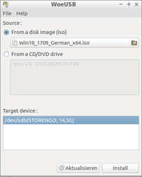

WoeUSB
Dieser Artikel wurde für die folgenden Ubuntu-Versionen getestet:
Ubuntu 16.04 Xenial Xerus
Zum Verständnis dieses Artikels sind folgende Seiten hilfreich:
WoeUSB ist ein Tool, um Windows-Installationssticks von einer ISO-Datei oder DVD zu erstellen. Das Programm unterstützt Windows 7, Windows 8.1 und Windows 10 und kann über ein grafisches Benutzer-Interface oder in einem Terminal genutzt werden.
Unterstützt werden die Boot-Arten:
Legacy/MBR-style/IBM PC compatible bootmode
natives UEFI-Booting auf FAT32 auf dem Stick
Installation¶
WoeUSB ist kein Bestandteil der offiziellen Paketquellen und muss daher über ein Fremdpaket installiert werden.
Fremdpaket¶
Von pkgs.org  werden
DEB-Pakete
werden
DEB-Pakete  angeboten.
Die unterstützten Ubuntuversionen und Architekturen werden aufgelistet.
Nachdem man sie für die korrekte Ubuntuversion und Architektur geladen hat, müssen DEB-Pakete noch installiert werden.
angeboten.
Die unterstützten Ubuntuversionen und Architekturen werden aufgelistet.
Nachdem man sie für die korrekte Ubuntuversion und Architektur geladen hat, müssen DEB-Pakete noch installiert werden.
Hinweis!
Fremdpakete können das System gefährden.
Verwendung¶

WoeUSB kann in Ubuntu-Derivaten bzw. deren Desktop-Umgebungen mit einem klassischen Anwendungsmenü unter "Systemwerkzeuge -> WoeUSB" gestartet werden.
Im Startfenster wählt man die ISO-Datei oder die DVD und als Ziel den USB-Stick aus. Mit Klick auf "Install" startet die Installation. Nach erfolgreichem Abschluss der Installation erscheint die entsprechende Meldung in einem Fenster.
In der Kommandozeile [2] lässt sich auf einfache Weise ein Stick (hier als ein Beispiel mit einem Windows-10 Image) erstellen mit:
Dieser Befehl kopiert die Daten auf eine existierende FAT-Partition von einem USB-Stick und macht ihn bootfähig. sdX1 ist dabei durch die Bezeichnung der Partition zu ersetzen.
woeusb --partition /Pfad/zum/Win10_1709_German_x64.iso /dev/sdX1
Dieser Befehl löscht komplett alle vorhandenen Daten auf dem Stick, erstellt eine neue Partitionstabelle und eine Zielpartition, kopiert die Windows-Daten und macht den Stick bootfähig. sdX ist dabei durch die Bezeichnung des Sticks zu ersetzen.
woeusb --device /Pfad/zum/Win10_1709_German_x64.iso /dev/sdX
Eine bestehende Partition sdX1 ist vorher mit umount auszuhängen. Nach der Installation auf sdX ist die Markierung lba durch boot zu ersetzen (z.B. mit Gparted).
- Erstellt mit Inyoka
-
 2004 – 2017 ubuntuusers.de • Einige Rechte vorbehalten
2004 – 2017 ubuntuusers.de • Einige Rechte vorbehalten
Lizenz • Kontakt • Datenschutz • Impressum • Serverstatus -
Serverhousing gespendet von